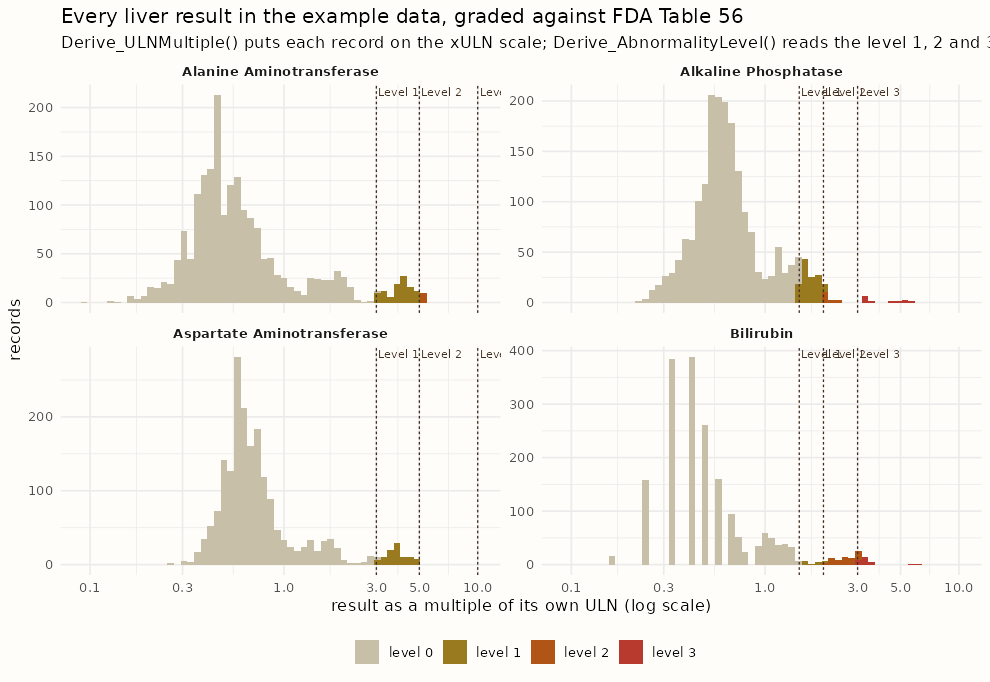

gsm.safety release review 2026-09-11
The FDA's Standard Safety Tables and Figures guide is mostly rules rather than drawings: three levels of laboratory abnormality, values so extreme they are treated as errors, results read as multiples of the upper limit of normal. Nothing in R carried those rules. This release is the foundation the static figures will stand on: the guide's appendix tables as package data, the first three functions that apply them to a lab table and hand the table back with the answers added, a requirement matrix that keys every one of the guide's 22 figures, and a column-by-column check of what the demo data can actually draw. Every number on this page was produced from the release branch on 2026-09-11.
reference rows 46 + 80
derivations 3, one rule each
requirement rows 38, figures 22 of 22
columns aligned 51, none unmarked
candidate gsm.safety v1.5.0-RC1, dev → main
Appendix Tables 56 and 57 give the level 1, 2 and 3 abnormality thresholds the guide counts outliers against; Tables 58 to 60 give the values beyond which a result is treated as a laboratory or recording error and left out of the mean-change figures. They existed only as a PDF. They are now two data frames, transcribed row for row, with the printed criterion kept beside the parsed number and the guide page on every row.
| Guide table | Page | Printed rows | Dataset rows |
|---|---|---|---|
| Table 56, abnormality levels, chemistry | 119 to 120 | 33 | 33 |
| Table 57, abnormality levels, hematology | 121 | 13 | 13 |
FDA_AbnormalityLevels | 46 | 46 | |
| Table 58, extreme values, chemistry | 122 to 123 | 26 | 52 |
| Table 59, extreme values, hematology | 123 | 9 | 18 |
| Table 60, extreme values, vital signs | 124 | 5 | 10 |
FDA_ExtremeValues | 40 parameters | 80 |
The extreme-value table is long: every parameter appears twice, once in US-conventional units and once in SI, because the guide prints both and the data decide which one applies. The example data are mostly SI with bilirubin in both unit systems, which is exactly the case that would go wrong with one column.
> subset(FDA_AbnormalityLevels, Panel == "Liver Biochemistry", + select = c(Parameter, Direction, Basis, Operator, Level1, Level2, Level3, GuidePage)) Parameter Direction Basis Operator Level1 Level2 Level3 GuidePage Alkaline phosphatase high uln_multiple > 1.5 2.0 3 120 Alanine Aminotransferase high uln_multiple > 3.0 5.0 10 120 Aspartate Aminotransferase high uln_multiple > 3.0 5.0 10 120 Total Bilirubin high uln_multiple > 1.5 2.0 3 120 > subset(FDA_ExtremeValues, Parameter == "Glucose", select = c(Specimen, UnitSystem, Unit, Low, High)) Specimen UnitSystem Unit Low High plasma US mg/dL 10.0 2700 plasma SI mmol/L 0.6 150
Where the transcription had to read, it says so on the row
The hemoglobin level 1 criteria are printed as ranges (12.5 to 13.5 g/dL for men); because the levels are cumulative the row stores the upper bound and keeps the printed text beside it. The platelet unit is kept as the guide prints it although the thresholds read as cells per microlitre. Three hematology thresholds printed without a comparator are read as greater-than like the rest of their table. Each of these is a Note on its row, and the hand-checked CSVs and the build script are in data-raw/, so a correction is one edit in one place.
Every later phase reads these two tables: the DILI plots for their 2x and 3x cuts, the outlier tables for their three levels, the mean-change figures for what to exclude. Transcribing them once, with tests, is what stops each figure carrying its own copy of the FDA's numbers.
Try it
pak::pak("jwildfire/gsm.safety@dev").data(FDA_AbnormalityLevels); data(FDA_ExtremeValues).subset(FDA_AbnormalityLevels, Table == 57).?FDA_ExtremeValues for the column contract and the reading rules.Each function takes the long lab table the example data already use, one row per participant per test per visit, and returns the same table with its answer added as new columns. Nothing is dropped and nothing is summarised, so a static figure and its interactive twin can read the same derived values. Derive_ULNMultiple() puts each result on the multiple-of-ULN scale. Derive_AbnormalityLevel() grades it against Tables 56 and 57 and says which direction and which printed criterion fired. Derive_ExtremeValueFlag() marks the results Tables 58 to 60 would exclude.

Every liver result in the example data, graded. The dashed lines are the Table 56 cuts read from the dataset above, not typed into the plot; the colours are the grade the function assigned. Bilirubin carries 30 level 3 results and alkaline phosphatase 12, which is what the eDISH quadrants will be drawn from in phase 1.
> dfLabs <- ExampleData("adbds") > dfLabs <- Derive_AbnormalityLevel(dfLabs) Derive_AbnormalityLevel left NA for records it could not evaluate: unit differs from the criteria's (mg/dL): Blood urea nitrogen in mmol/L, Calcium in mmol/L, Cholesterol (total) in mmol/L, Glucose in mmol/L, Phosphate in mmol/L qualifier 'Fasting' needs a column this function does not take: Glucose unit differs from the criteria's (g/dL): Albumin in g/L, Protein (total) in g/L basis 'baseline_multiple' needs a baseline column this function does not take: Creatinine needs a sex column (strSexCol) for the sex-qualified rows: Hemoglobin ... (the full list names every skipped parameter and why) > dfGraded <- dfLabs[!is.na(dfLabs$AbnormalityLevel) & dfLabs$AbnormalityLevel > 0, ] > table(dfGraded$TEST, dfGraded$AbnormalityLevel) 1 2 3 Alanine Aminotransferase 102 10 0 Alkaline Phosphatase 121 14 12 Aspartate Aminotransferase 93 0 0 Bilirubin 15 71 30 Chloride 243 27 0 Leukocytes 35 9 0 Potassium 40 9 0 Sodium 5 2 0
A threshold is compared only in its own unit, and the function says what it skipped
Table 56 prints glucose in mg/dL; the example data carry it in mmol/L. Dividing or multiplying silently would be a second, unstated rule. The function grades an absolute threshold only when the record's unit matches, folds spellings of the same unit (mEq/L and mmol/L for the electrolytes, GI/L and the guide's x 10^9 cells/L), converts nothing, and prints the parameters it left ungraded and the reason. The ULN-multiple rows, the whole liver panel among them, grade in any unit because the multiple has none.
The same discipline holds for the extreme values: hemoglobin in mmol/L matches neither the g/dL nor the g/L threshold row, so it is left unflagged and named, while sodium, bilirubin, the transaminases and the vital signs match in the data's own units. On the pilot data nothing is extreme, which is the expected answer for a clean trial dataset and is asserted in the suite.
| Function | Requirement rows | What the tests assert |
|---|---|---|
Derive_ULNMultiple() | FDA-RULE-001 | value over its own ULN; NA for a missing or non-positive ULN; the peak per participant reproduces what Input_HysLaw() computes for the same people |
Derive_AbnormalityLevel() | FDA-RULE-002, -003, -016 | one probe beyond each defined level of every absolute and ULN-multiple row in Tables 56 and 57, in both directions; the on-threshold case for strict and non-strict operators; the highest level wins; a substitute criteria table; the sex-qualified rows with and without a sex column |
Derive_ExtremeValueFlag() | FDA-RULE-004, -005 | a value beyond a threshold in either unit system is flagged; a missing threshold is no bound; the printed value itself is not extreme; an unmatched unit is NA with a message |
The design calls this the L1 contract: normative rules live in R once, and the renderers read enriched participant-level data. Phase 1 will prove it on the DILI pair, where safety.viz's hep-explorer today computes its own ULN multiples in the browser.
Try it
dfLabs <- Derive_ULNMultiple(ExampleData("adbds")) and look at ULNMultiple for any transaminase row.Derive_AbnormalityLevel(dfLabs) and read the message: it is the list of what the demo data cannot be graded on, and why.strSexCol = "SEX" and watch the hemoglobin rows change.Derive_ExtremeValueFlag() a row with STRESN = 3000 and STRESU = "mg/dL" for Glucose and see it flagged high.The safety.viz renderers each carry a requirement matrix, and a test cites a row by its ID. The FDA figures now have one too, in the same shape: FDA-FIG-001 to FDA-FIG-022 for the 22 figures, numbered as the guide numbers them, and FDA-RULE-001 to FDA-RULE-016 for the rules the guide states once and several displays read. A static rendering here and an interactive one in safety.viz cite the same ID, so their evidence meets on one row.
$ grep -c '^| FDA-FIG-' requirements/fda-stf.md 22 $ grep -cE '^\| FDA-[A-Z]+-[0-9]+' requirements/fda-stf.md 38 $ grep -rho 'FDA-RULE-[0-9]*' tests/testthat/ | sort | uniq -c 4 FDA-RULE-001 6 FDA-RULE-002 1 FDA-RULE-003 3 FDA-RULE-004 2 FDA-RULE-005 1 FDA-RULE-008 1 FDA-RULE-016
| Phase | Figures | Engine | Requirement |
|---|---|---|---|
| 0, this release | none; rules 001, 002, 004 and 005 ship as the datasets and the three functions | obot.roadmap#9 | |
| 1 | F7, F8, F15, F22, F10, F16 to F20, F2, F3 | DILI quadrant scatter, shift scatter, box plot over time, dot and risk-difference forest | obot.roadmap#323 |
| 1b | F5, F21, F12, and the Kaplan-Meier family F1, F4, F11, F13, F14 | paired retention bars, incidence-rate point-range, wrapped Kaplan-Meier | obot.roadmap#324 |
| not scheduled | F6, F9 | mean change line with CI |
A test in this package ends with the issue it proves, and now also names the row: test_that("Derive_ULNMultiple divides the result by the record's own ULN (FDA-RULE-001) (#78)", ...). The matrix test checks that every ID any test cites exists in the file, so a row cannot be renamed out from under its evidence.
Try it
requirements/fda-stf.md on dev and find FDA-FIG-007: the eDISH plot, its engine, its twin and its phase.FDA-RULE-010, the 30-day pairing window, and its note on why the interactive twin does not apply it yet.requirements/README.md says how a new row is keyed.The guide is written against ADaM. gsm.safety holds two other shapes: the vendored example data and the Mapped_* domains gsm.mapping produces. The design assumed they aligned and said phase 0 should check. The note lists, for ADSL, ADAE, ADLB and ADVS, every column the 22 figures and the three derivations need, marks each as found, mapped, derivable or missing, and records a decision for every gap.
| Domain | Needed | Found | Mapped | Derived | Missing | Decisions |
|---|---|---|---|---|---|---|
| ADSL | 9 | 5 | 3 | 1 | 0 | vendor treatment dates, death and safety flags, sex and age from pharmaverseadam; arm is an engine argument |
| ADAE | 13 | 8 | 1 | 1 | 3 | derive the treatment-emergent flag from start day; vendor outcome and relatedness; OCMQ and action taken are out of scope on the demo data |
| ADLB | 17 | 10 | 0 | 4 | 3 | derive baseline, change and the baseline flag once; vendor study day, without which there is no 30-day DILI window; absent analytes are out of scope |
| ADVS | 12 | 7 | 0 | 3 | 2 | the same derivations on the vital-sign rows; respiratory rate is absent; pulse stands in for heart rate |
| Total | 51 | 30 | 4 | 9 | 8 | two vendoring passes, one derivation helper, three declared exclusions |
Three things the check found that the design did not know
No Mapped_* domain carries a treatment arm, so the engines take an arm column as an argument and render a single arm without one. gsm.mapping's standard lab mapping names the result rptresn and has no upper limit of normal, unit or visit, while this package's own metric workflows declare lbstresn and lbstnrhi; that split is recorded for the phase 1 requirement. And pharmaverseadam shares the pilot study's participants exactly, all 254 of them with the same arm assignments, which makes vendoring the missing columns a join rather than a reconstruction.
The note ends with the column contract every lab and vital-sign engine codes against, with the default names in the example data's spelling and their ADaM and Mapped_* equivalents, so phase 1 starts from an agreed frame rather than rediscovering it per figure.
Try it
design/fda-adam-alignment.md on dev.FDA-RULE-010 in the matrix that depends on it.ExampleData("adbds") already has, or says how it will get one.